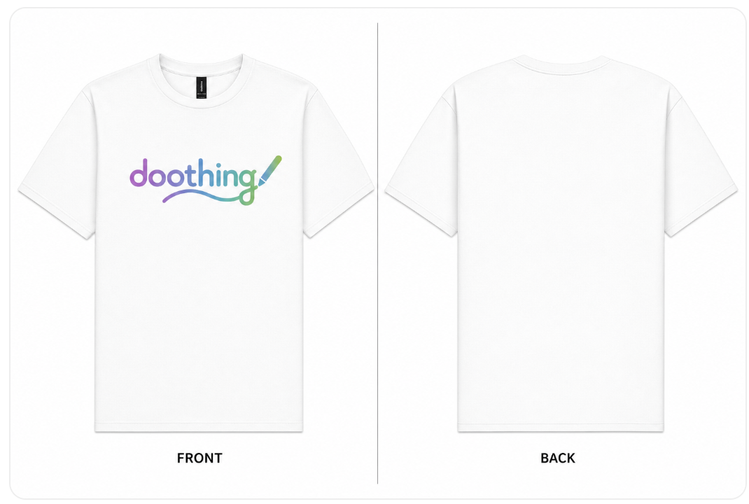
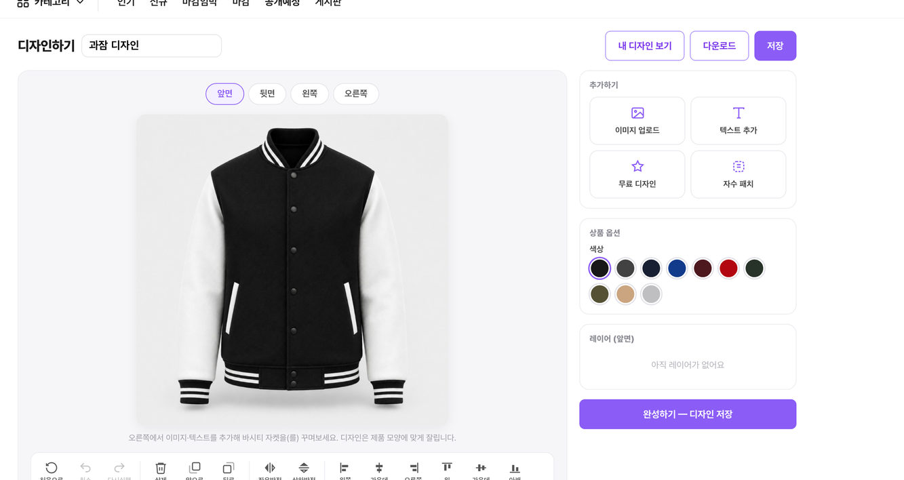
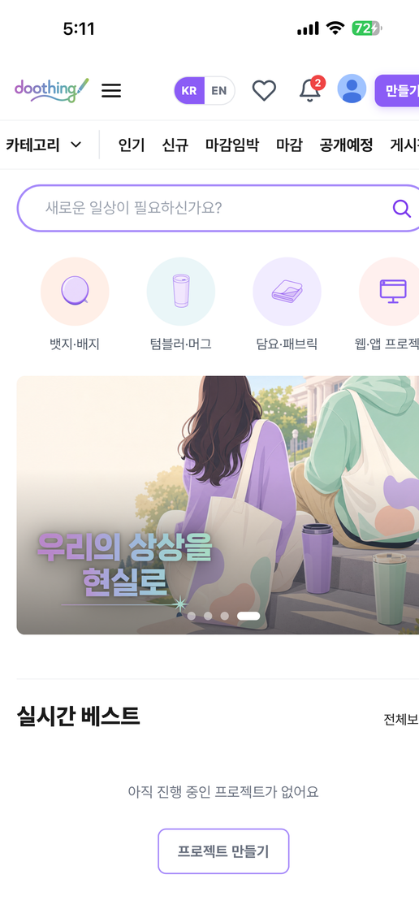
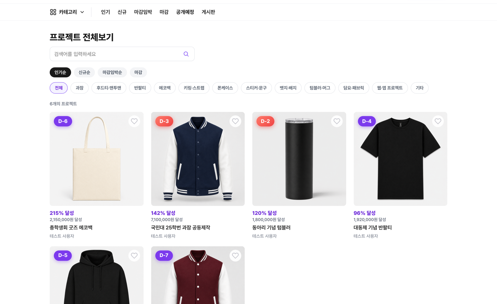
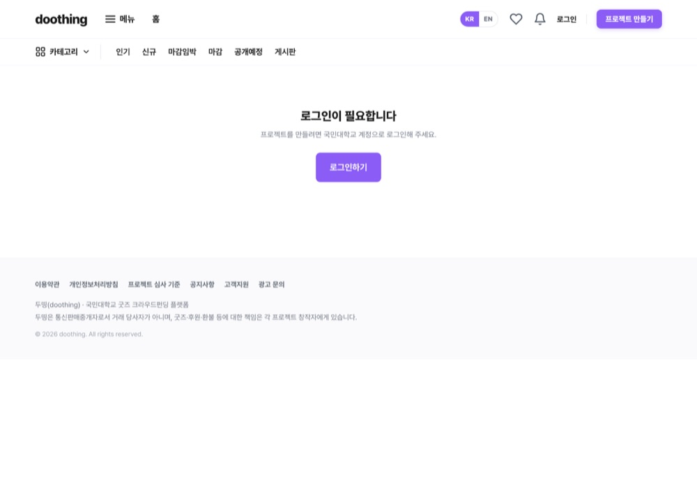
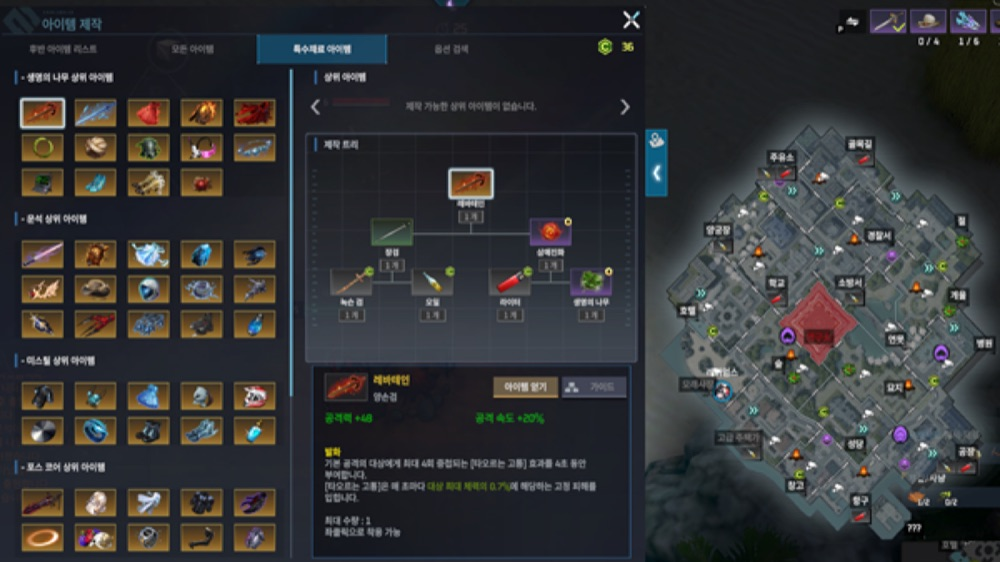
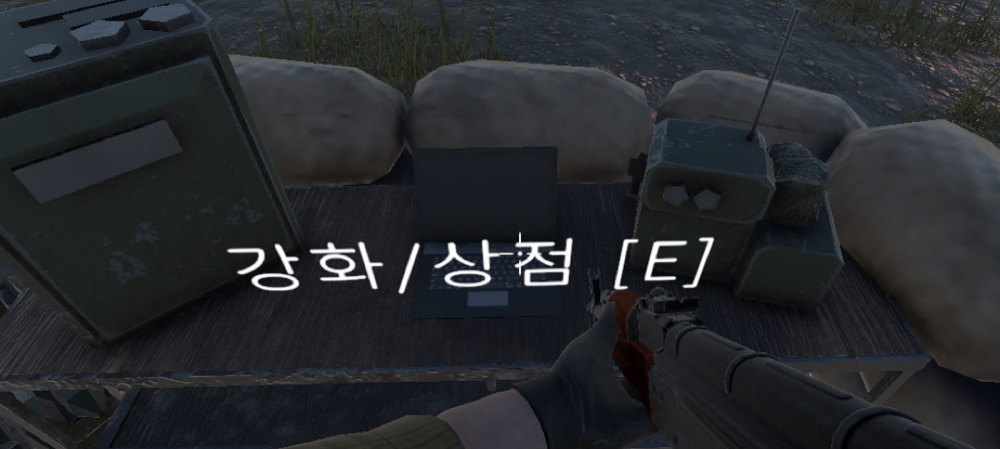

대학생 굿즈(과잠·키링·텀블러)는 수요가 분명한데도 디자인의 벽, 소량 제작 단가, 공동구매 운영의 번거로움에 막힙니다. 두띵은 이 셋을 하나의 흐름으로 잇습니다. 기술적으로 가장 까다로웠던 지점은 ① AI 이미지 생성이 한 번에 60초를 넘겨 CDN 타임아웃에 걸리는 것, ② 결제 마감 스케줄러가 상시 안전하게 돌아야 하는 것, ③ 흰 제품에 디자인을 입힐 실루엣 마스크가 부정확한 것이었습니다.
시스템 아키텍처 · AWS
사용자 웹·모바일
Vanilla JS · Capacitor
→
CloudFront
CDN · ACM TLS
→
S3 정적 프론트
HTML·CSS·JS
/api →
EC2 · API (담당)
Express+TS · PM2 · 결제 스케줄러
→
RDS · OpenAI
PostgreSQL · gpt-image
정적 프론트는 CloudFront/S3로 분리 서빙하고 /api만 EC2(Express+TS, PM2)로 라우팅합니다. AI 생성은 외부 OpenAI를 비동기로 호출하고, 결제 마감은 EC2의 상시 스케줄러가 처리합니다.
핵심 기능
AI 도면 · 가상 피팅
옷 사진을 gpt-image-1로 제작용 플랫 도면으로 합성하고, 모델 착용 미리보기까지 생성합니다. AI 이미지 서비스를 단독으로 구현하며 비용·안정성 통제를 서비스에 내장했습니다.
입력 크기 캡(8MB) · 60초 중복요청 캐시 · 일일 한도 · 과금 로그 · 타임아웃 — 5겹 통제
AI 공급자 추상화로 Gemini → OpenAI를 라우트 변경 없이 무중단 전환

AI 도면 생성 — 옷 사진을 앞·뒤 한 장의 플랫 제품 도면으로 합성 (gpt-image-1)
웹 디자인 에디터
복잡한 툴 학습 없이 브라우저에서 바로 — 색·텍스트·이미지·자수 패치를 올려 과잠·후드·티셔츠 등 10여 종 굿즈를 직접 디자인합니다. 앞·뒤·옆 면과 레이어를 지원합니다.

디자인 에디터 — 과잠을 색·로고·텍스트로 커스텀
목표달성형 공동구매 펀딩
목표 금액이 모여야 제작·결제되는 리스크 제로 구조. 초기 자본 0원·재고 0으로 누구나 펀딩을 개설하고, 실시간 달성률·남은 시간·참여 인원을 투명하게 보여줍니다.
60초 주기 결제 마감 스케줄러를 advisory-lock으로 보호
서버측 가격 재계산으로 위·변조 방어
펀딩 상세 — 달성률·참여 인원·리워드 티어
한 코드베이스로 웹·모바일
Capacitor로 같은 웹 자산을 Android·iOS 네이티브 앱으로 함께 빌드합니다. 시스템 브라우저 + 딥링크로 인앱 OAuth 제약을 우회해, 네이티브 인력 없이 멀티플랫폼을 잡았습니다.

모바일 앱 홈 — 둘러보기·디자인하기·메이커 페이지
트러블슈팅
70초 AI 생성 vs 60초 CloudFront 오리진 타임아웃
문제
gpt-image 생성이 약 70초로 CloudFront 오리진 타임아웃(60초)을 넘겨 매번 실패
해결
검증 직후 jobId를 202로 반환, 생성은 백그라운드, GET /ai/jobs/:id를 본인 작업만 3초 간격·최대 200초 폴링으로 회수
결과
60초 벽을 넘겨 AI 생성이 타임아웃 없이 안정적으로 완료
마감 스케줄러가 DB 페일오버 시 죽거나 마감을 중복 처리
해결
pg_try_advisory_lock non-blocking 분산락으로 락 미획득 시 이번 tick을 건너뛰고, connect 실패도 흡수해 크래시 없이 다음 tick에서 회복
결과
DB 단절 시 프로세스 크래시·마감 중복 처리 모두 방지
더 많은 화면

둘러보기 · 카테고리 상품 목록
커뮤니티 게시판 · 홍보·후기

펀딩 개설 · 리워드 구성
결과
전체 355 커밋 중 251 커밋(1위) · REST 엔드포인트 79개 · DB 마이그레이션 45개 중 37개 작성 · Python 이미지 처리 툴 4종 · 커밋 228건이 Claude Code 페어.
회고 · AI 기능의 난이도는 모델 호출이 아니라 타임아웃·비용·캐시·실패 같은 운영 제약을 구조화하는 데 있었습니다. 공급자 인터페이스 한 겹이 전환 비용을 크게 줄였고, AI 코딩 도구를 반복 가능한 감사 절차로 엮으니 품질이 눈에 띄게 올랐습니다.
PROJECT 02
KDD — 학사 규정 RAG 챗봇
학칙·학사 규정 PDF를 근거로 출처와 함께 답하는 RAG 챗봇. AI가 지어내지 않고 실제 문서를 인용하게 만드는 백엔드를 맡았습니다.
일반 챗봇은 그럴듯하게 지어내는(hallucination) 한계가 있습니다. 학사 규정처럼 정확성이 중요한 도메인에서는 답변이 반드시 실제 문서를 근거로 하고 출처를 추적할 수 있어야 했습니다. 임베딩·검색·생성 같은 AI 연산은 별도 FastAPI 서버가, 그 서버를 호출·조율하고 문서·FAQ·통계 도메인을 책임지는 백엔드는 제가 맡았습니다.
상점 → 인벤토리 → 강화로 이어지는 경제 루프를 데이터(ScriptableObject)-로직-UI 계층으로 분리해 설계했습니다. 등급별 스탯·재료를 데이터화한 무기 강화, 레벨·포인트로 6종 능력치를 올리는 업그레이드, 시선 기반 나침반·탄약·낮밤 시계로 구성한 인게임 HUD를 만들었습니다.
무기 시스템 · 강화 재료
아이템 상점
능력치 강화

인벤토리 · 재료

인게임 HUD · 거점 상호작용
회고 · 상점·인벤토리·강화가 어긋나지 않게 맞물리려면 데이터와 로직을 떼어 두는 편이 유지보수에 유리했습니다. 백엔드·AI와는 거리가 있지만 객체지향 설계와 시스템 통합을 보여주는 사례로 넣었습니다.